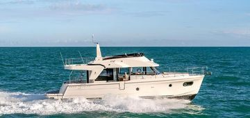

B-Atlas Boat Guide · BENE-47
Beneteau Swift Trawler 47 Flybridge
2019–2022
The Beneteau Swift Trawler 47 is a three-cabin flybridge cruiser designed for faster long-distance family cruising. Twin diesels, broad side decks and a large flybridge make it substantially more capable and more complex than the smaller single-engine Swift Trawlers.

- Length
- 48.33 ft
- Beam
- 14.75 ft
- Draft
- 3.83 ft
- Hull behaviour
- Semi-Displacement
- Fuel
- Diesel
- Propulsion
- Shaft
- Engine configuration
- Twin Cummins diesel inboards
- Boat family
- Trawler
- Construction
- Fiberglass
Best for
- Families or couples wanting substantial long-range accommodation
- Coastal and Great Lakes cruising with larger marina infrastructure
- Owners comfortable maintaining twin diesels and yacht-scale systems
Trade-offs
- Twin machinery and larger systems increase ownership cost
- Nearly 15-foot beam requires larger slips and haul-out facilities
- Flybridge air draft limits some inland routes
Known concerns
- No model-specific concern has been promoted to B-Atlas’s evidence threshold. This does not mean the model has no age-, condition- or hull-specific risks.
Inspection focus
- Inspect both engines, shafts, exhausts and cooling systems
- Inspect flybridge structure, electronics and helm controls
- Inspect side doors, glazing and deck penetrations
- Review generator, charging, sanitation and domestic systems
Continue researching
Related boat models
Beneteau Swift Trawler 48 Flybridge
48.33 ft · Semi-Displacement
Beneteau Swift Trawler 52 Flybridge Flagship
55.77 ft · Semi-Displacement
Beneteau Swift Trawler 35 Flybridge
37 ft · Semi-Displacement
Beneteau Swift Trawler 34 Flybridge or Sedan
36.02 ft · Semi-Displacement
DeFever 49 Cockpit Motor Yacht Cockpit Motor Yacht
48.83 ft · Semi-Displacement
Kadey-Krogen 44 AE Advanced Ergonomics
49 ft · Displacement
About this record
B-Atlas preserves uncertainty: missing information remains unknown rather than being treated as a negative. Specifications and guidance describe the model record; individual boats can differ by year, equipment, refit and condition.